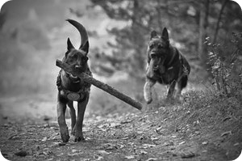

Para Adoção
A AAIPA oferece um lar temporário para cães e gatos resgatados de situações de dor, sofrimento e maus-tratos. Todos os animais são castrados e microchipados antes de irem para um novo lar.
Desde 2011, resgatamos, cuidamos e promovemos a adoção de cães e gatos em Itapeva/SP. Junte-se a nós na luta pelo bem-estar animal.
Nossa atuação: Educação, conscientização, atuação política e festejos pela ampliação do respeito aos animais!
Entre em contatoA AAIPA (Associação dos Amigos Itapevenses Protetores dos Animais), é uma organização que atua na recuperação, adoção, conscientização e combate aos maus-tratos de animais, em Itapeva, São Paulo. Nos dedicamos à proteção dos animais, garantindo que seus direitos sejam respeitados e divulgando informações sobre bem-estar animal.
Nosso trabalho consiste em:
Segunda a Sexta: 10:00 – 20:00
Gratuito para tutores de baixa renda
Mutirões de castração
Campanhas de vacinação gratuita
Sua contribuição ajuda a financiar castrações, vacinas e tratamentos de animais necessitados. Ajude a AAIPA a continuar esse trabalho de amor e dedicação!
Transparência: Recebemos emendas parlamentares dos vereadores de Itapeva, mas é muito pouco em relação à problemática da causa. Toda emenda recebida vai diretamente para castrações dos animais dos munícipes, nada é investido na entidade.
Mais informações aquiQue tal dedicar algumas horas para fazer a diferença? Precisamos de voluntários comprometidos seja para levar nossos cães para passear ou mesmo auxiliar na digitação de notas fiscais – um trabalho 100% remoto.
Seja parte dessa missão e ajude a transformar a vida dos nossos animais. Entre em contato e venha somar com a gente!
Ao fazer suas compras, lembre-se de pedir a Nota Fiscal sem o seu CPF e doe para a AAIPA. Você pode depositar suas notas em nossas caixinhas espalhadas pela cidade ou entrar em contato para combinarmos a retirada.
Ser voluntário é fácil e faz toda a diferença na vida dos nossos animais. Existem várias maneiras de ajudar: venha passear com nossos cãezinhos, participe da coleta de tampinhas, doe suas notas fiscais e, se precisar de mais informações, estamos aqui para te orientar. Doar o seu tempo faz a diferença!
A AAIPA oferece um lar temporário para cães e gatos resgatados de situações de dor, sofrimento e maus-tratos. Todos os animais são castrados e microchipados antes de irem para um novo lar.
Em 2024, centenas de cães e gatos encontraram um novo lar amoroso graças às nossas campanhas de adoção em parceria com ONGs locais e voluntários dedicados.
Realizamos mutirões de castração (1º em 2010, 25 animais; 2015 com Projeto Rondom; 2022–24), campanhas de vacinação e Cãominhadas anuais em parceria com o Instituto Planeta Terra e a Prefeitura Municipal de Itapeva.
WhatsApp: (15) 99705-4843
Endereço: Anel Viário Mario Covas, 6114 – Bairro de
Cima – Itapeva/SP – CEP 18400-000
CNPJ: 13.179.967/0001-24
Visitas educativas: Recebemos estudantes – crianças, adolescentes e universitários – e professores que interagem com os animais e recebem informações sobre abandono, maus-tratos e crueldade.